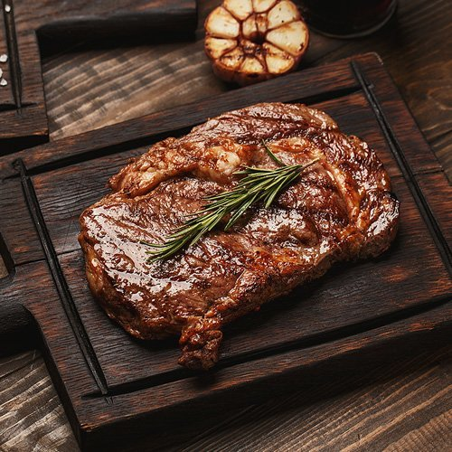

Steak

Description
Steak is a popular cut of meat, typically from beef,
known for its rich flavor and tender texture when cooked properly. It can be prepared in various ways, i
ncluding grilling, pan-searing, or broiling, and is often seasoned with salt, pepper, and other spices.
Pairing steak with sides like mashed potatoes, vegetables, or a glass of red wine
enhances the dining experience.
Ingredients
- 2 beef steaks
- 2 tablespoons of olive oil
- 1 branch of rosemary
- 1 garlic clove
- 2 teaspoons of butter
- 1 lemon
- black pepper and sea salt
Steps
- Prepare steaks by seasoning it with salt and adding olive oil. Leave it for 5 minutes.
- When a pan is hot, put steaks on it. Fry it for 2-3 minutes for each side.
- Rub garlic with each side of steak. Add butter on steaks. Hit each side of steak with rosemary branch so it gives its flavor to steak.
- Serve steaks on plates and add some lemon juice.
- Enjoy!
Home